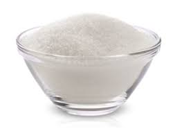

Receita Gelatina Cremosa
Ingredientes (6 porções)
 3 caixas de gelatina de morango
3 caixas de gelatina de morango
 3 colheres de sopa de açúcar
 2 caixas de creme de leite
2 caixas de creme de leite
Modo de preparo
Tempo de preparo: 10 minutos
-
Prepare as caixinhas de gelatina todas juntas, mas com menos água para ficar mais firme, com a açúcar.
-
Depois coloque as caixinhas de creme de leite junto com a gelatina e bata por uns 2 minutos.
Leve à geladeira por 4 a 5 horas.
A gelatina separa do creme e ficam 2 camadas.